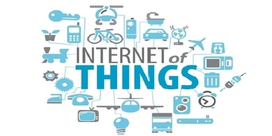

Internet of Things (IoT) Security
The Internet of Things (IoT) isn't anything new. I first started working with the concept and devices back in 2008. The one thing that is new is how Security has taken a front row seat in the conversation of IoT. Talks are being held at all levels from the Security Industry to the US Government on what to do, and most important, who is responsible for the security of IoT devices.
No matter what is decided, as far as who is responsible for IoT security, it only makes sense that the individual placing the device on the Internet or internal network is responsible. Responsible for what you might ask? They are responsible for not causing harm to others on the Internet as well as they are responsible for the security of their own network.
That being said, what does an individual or corporation do about this? First, if you're unsure or call me and we can assist you in your deployment of IoT device(s). However here are some items that you should be doing to secure your IoT devices:
- Understand and profile the device to identify network connectivity needs.
- Does it need Internet access? If so, then what IPs or URLs does it need to connect with?
- ACTION - Put network rules in place to only allow the device to communicate on the Internet to the required IPs or URLs.
- Does it need to communicate to other devices on your local network? If so, then identify where on the network.
- ACTION - Put network rules in place in order to segment the IoT devices from the remainder of your network and only allow communication to areas that are needed. Be very precise and strict with your network rules.
- Does the IoT device require a user login? If so, then these should be centrally managed either by the vendor for smaller scale deployments or by the IT department for larger scale deployments.
- Are they wireless devices that could hold proprietary information? If so, then there is a risk of one of these devices getting lost.
- ACTION - Employ monitoring of IoT devices with the ability to perform geolocation. There are several products on the market that will allow you to perform this depending on how the IoT device is connected. Alert when a device roams outside of its allowed location.
Finally, you should make sure that all of the IoT devices are patched with the most recent firmware.
Please contact info@agilesecops.com with any questions or if you need help with your IoT deployment.